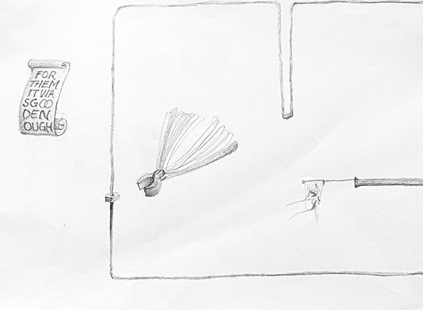

David Wojnarowicz, 1988
For the past year I've been talking to friends and colleagues about my desire to practice publishing as a communal practice, rather than it being a solo endeavor. I felt like I didn't know much about it, so this website is a first step into the field.
Artist and educator Paul Soulellis on creating urgent artifacts, radical DIY publishing, and a call to document this moment.
It’s mid-May and I’m about 58 days into my quarantine. The word “quarantine” comes from quarantena, in old Venetian, meaning 40 days, which was how long ships were required to be isolated before passengers and crew could go ashore during the bubonic plague. And although we’ve been contained, there’s something about this initial period of our own collective quarantena, those first 40 days in March and April, that for me was as much about mobilization as it was restriction. In that moment of slowing down, when 40 days felt like a year, we learned so much about how artists and designers can organize in crisis, through call and response. So what I’m writing about here is a contradiction, of sorts: how to get to work—urgently—during a shutdown.
In crisis, we must organize. As businesses and schools closed in early spring 2020, and we started isolating ourselves and retreating to the screen, we saw a dazzling amount of mutual aid efforts beginning to circulate. It seemed like they appeared overnight, but they were built onto networks that had been fortified over time, way before COVID-19. Like many of us, what I felt most was fear, but also, below the fear, motivation. It was time to get to work, directing energy towards those who already and always carry the largest burdens, in our own communities and beyond.
What does communal care look like in a moment of crisis? Solidarity, mobilizing networks of people within and across communities, connecting needs with resources, and the redistribution of assets—these are some of the inspiring mutual aid strategies we saw in action during the first few days of the pandemic.
In this declaration on March 13, the activist group Decolonize This Place wrote that the shutdown is “freeing up our time to find each other and build our own solidarity economy through mutual aid, education beyond schools, and work beyond wage servitude. You can call it ‘commoning-in-the-crisis.’” We need to remember this phrase, because it foregrounds something very specific about solidarity and coming together in urgent times: that we can work from shared, common positions, in common, and on common ground.
In the first days of quarantine, specific questions related to my own creative community came to mind, like: how can we provide relief to artists and writers being impacted by the crisis, in both creative and monetary forms? How should we collectively record and affirm the extraordinary conditions, language, emotions, and experiences before they evaporate? And how could my own practice learn from commoning-in-crisis, and adapt to become a better model of communal care?
No crisis is ever new. Depending on who you are and your specific relationship to burden and privilege, crisis can be a constant. BIPOC, queer, trans, disabled, femme, low-income, immigrants, survivors, and all other underserved and minoritized people have always known struggle. But our experiences are typically less visible, deliberately left out of archives, and erased
from history.
Centering, amplifying, and preserving perspectives that exist outside of conventional narratives is essential first-aid work, especially during heightened times of crisis.
Let’s look towards those who identify, describe, and interpret what’s happening around them from less privileged positions; those who give us insight into the ways power operates, how culture shifts, and how justice can be served.
David Wojnarowicz, 1988
I think about David Wojnarowicz’s jacket here, worn by him at an AIDS demonstration 32 years ago. I see it first as an act of protest, but then as a gesture of publishing, manifesting an urgent message in public space, using the very body that is the subject of that message, the body that will die of the disease, as the platform for its dissemination. This jacket is so many things. It’s art, it’s graphic design, it’s a plea, it’s a protest at a very particular moment. It’s an urgent artifact.
I saw so many urgent artifacts circulating during those first few weeks of quarantine, documents and projects and actions that don’t conform to what we normally think of as good art or design: collaborative google sheets, online petitions, protests, surveys, letter-writing, essay writing, note-taking, shared open-access writing spaces, streaming workshops, performances, talks, teach-ins, raw and unedited poetry, and quickly made zines.
All of these “urgent artifacts” were evidence of how a crisis spreads its toll unevenly in real time, with first-hand experiences shared and recorded in the quickest way possible.
Urgent artifacts expose our collective pain points and provide a fleeting record of the moment. It’s crucial that we acknowledge and make space for this work by affirming and supporting each other in non-traditional forms of making and creating, and preserve these urgent artifacts before they evaporate, for whatever comes next.
Studying stories of queer failure, and those voices that resist proper inclusion in the smooth narratives of history—and connecting them to our present condition—has been a valuable way for me to approach being an artist, and to teach design. And I see others doing it too. As our platforms and institutions fail us again and again, we need to look for new ways to tell stories, write histories, and complicate what we typically accept as good or new or important.
If there’s a way to characterize these acts of creative labor—work that aims to document, agitate, redistribute, or interfere with power at these pain points—I’m calling it urgentcraft. Urgentcraft during COVID-19 looks like protests happening on Instagram or within Animal Crossing, or a google doc used to collaboratively assemble work by poets, or a congressperson who makes a zine about mutual aid, or a letter demanding changes to a school as it scrambles to get a grip. It looks like a handcrafted, DIY platform that provides access to resources, support, and relief.
Creative first responders who practice urgentcraft have already been working, prioritizing equity, solidarity, and communal care practices—not top-down charity. They mobilize quickly using modest, available tools and materials, providing support, spreading information, making demands, or simply expressing the moment, despite the failures of larger structures and institutions. They go to where the conversations are already happening and that’s where they locate their work.
Urgentcraft isn’t necessarily legible to everyone; its strength is in its specificity, designed for certain communities, while barely acknowledged by others.
Urgentcraft is intimately tied to independent, radical publishing. Work that carries an urgent message wants to circulate and it wants to spread. Dissemination in public is an essential part of how it works, and in a crisis, there’s no time for lengthy approvals from mainstream publishers. Artists, designers, and writers who produce urgent artifacts are working fast to create their own publics—reproducing, printing, projecting, and amplifying to smaller, specific audiences who are ready to engage in real time.
Urgentcraft means choosing to remain outside of the mainstream and the commercial. It’s a refusal to participate in normative definitions of professionalism and success, like academic publishing and the gallery system. Sometimes, this means sacrificing traditional rewards and locating your work in public space, on social media, or with your own small press, on your own terms.
As institutions crack wide open, they reveal new spaces and opportunities for reshaping and reimagining an unjust world.
For many of our leaders, a global pandemic means an opportunity to profit. But for anyone who doesn’t want to play along with disaster capitalism, urgentcraft offers a way of working below, beside, and behind the scenes, counter to professional market demands.
So here is a constellation of tactics to imagine what comes next, not “when the crisis is over,” but for when the harshest breakdowns are occurring. It’s a proposal to consider some of these tactics in your own creative work, like illegibility, agitation, radical publishing, and messy sense making. It’s a set of principles that works to resist the smooth flow of design perfection and oppression-based ideologies, especially for art and design students and educators. I assembled them, but they’re meant to be borrowed, distributed, used, re-circulated, and re-authored however you wish.
1. Do what you can
2. Use modest tools and materials
3. Understand the politics of your platforms
4. Practice media hybridity
5. Work in public (self-publish!)
6. Practice a slow approach to fast making
7. Think big but make small
8. Redistribute wealth and accumulation
9. Work towards the then and there of
queer futurity
(while acknowledging past struggles and privileges)
10. Agitate/interfere (“make good trouble”)
11. Dismantle white supremacy / be anti-racist
12. Resist, loosen, and dismantle ableism,
heteropatriarchy, and settler colonialism
13. Resist capitalist strategies
14. Refuse design perfection / stay with the mess
15. Question linearity and other hierarchical
structures
16. Commit to maintenance and self-care
as a form of urgency
17. Fail to provide the perfect read (resist legibility)
18. Use (steal from) the institution when you can
(while resisting its values) (from Stefano Harney
and Fred Moten, “The University and the
Undercommons: Seven Theses,” 2004)
19. Prioritize communal care as a never-ending practice
Right now, I’m prioritizing these principles in my own work and I’m keeping my gaze fixed on independent, artist-run spaces that work this way. I’m focused on non-linear, queer, anti-racist projects that agitate, interfere, and take care, that hold space for others, to amplify voices, and to connect communities. These are practices that refuse to replicate or support heteronormativity, white supremacy, settler colonialism, and capitalism. In a moment like this one, with the risks as high as they are, prioritizing communal care is imperative. The urgent artifacts that these artists create don’t wait for a crisis to peak; their work is ongoing and persistent.
Recently, my own artist’s practice has been focused on Queer.Archive.Work, a series of projects that ask: how might a publication provide a queer space for collective care? As I’ve opened up to new networks, connecting queer theory to art and poetry to publishing communities who make good trouble with their work, I’ve tried to create a platform for voices who send urgent signals out into muddy waters, important messages that don’t comply. The publications that I release through this project are designed to make a physical mess, as the components shift around, and when they slide out of their containers.
Urgentcraft “stays with the mess” to allow for an abundance of meaning, and no dominant narrative.
Earlier this year, I decided to transform Queer.Archive.Work into a physical space. I established a non-profit organization, and besides teaching, this is where all of my energy goes these days. I’m interested in how a gathering place can be porous; how this generous coming and going in space can work to create and support a community, and where access to tools is a form of shared empowerment (in this case a shared risograph printer in a publishing studio). This is about bringing engaged pedagogy into a more open and diverse community, away from larger institutions. It’s about physical space and the radical potential of the printed artifact.

Queer.Archive.Work #3 (2019)
As of February of this year, I had opened up the space, established the 501(c)3, and started turning it into a well-trafficked place, a space that would always be free to access; where productivity could be high, but expectations for success would be low, or even non-existent. It was joyful to see people coming in to work with the risograph printer, opening up access to a tool like this and empowering people to realize their work in new ways. So, we were off to a good start. Just before the crisis, I began applying for grants, and launched a riso residency program. And then, of course, I was suddenly forced to close it up to the public.
After closing our doors, I had to get to work in some other way, doing something that could happen remotely. In mid-March, I announced an open call for a “mutual aid publication:” part protest, part time capsule. I thought about how we needed to save all of this evidence being created in quarantine; that as conditions normalized later on, we would need access to this very strange mix of panic, support, and emotional expression, as a crucial affirmation of what happened.
Within 10 days of announcing the open call, I’d received over 100 submissions for what would turn into Urgency Reader 2—a dense assemblage of poetry, essays, manifestos, and other forms of expression created during quarantine. I heard from former students and friends, but mostly from artists and writers and poets who were new to me, so this was a humbling learning experience about the power of networks, and the need to be heard in this moment.
Mutual aid publishing materializes a practice of call and response, and in this response we’re in it together.
Urgency Reader 2 would be a document of this moment. With Queer.Archive.Work’s risograph printer I produced a very small edition, using all of the ink and leftover paper in the studio. I scanned one of the copies, made it available for download, and now it’s circulating. Contributors were compensated using funds from a grant I had just received, and I was able to sell the printed copies to raise funds for our risograph residencies, which start up this summer.
We’re faced with a kind of doom right now that sometimes feels like the end of the story. So here’s what you can do, in your own work, whether it be art, design, or otherwise:
Use what you have, whatever is right in front of you. Don’t wait for the next wave of crisis.
Fortify your networks now, so that when another flashpoint happens you’re prepared to connect, to call, and to respond, to gather, and to be in it together, whatever that means to you.
Map your needs. Map your assets. What are your resources? How will you share your abundance?
Be generous in how, what, and with whom you share, because in these moments of exchange, communities form.
Use the urgentcraft principles, re-shape them, add to them, share them. If nothing else, keep them around, as a reminder that art and design can be used to loosen power.
Alexandra Vitko, 2024
Stanislaw Zielinski, 2024
Weronika Wilska, 2022
Dasha Glushkova, 2024
Suzie Veldhuijzen, 2024
Alessia Campanella, 2023
The interview was conducted over e-mail in the period from Dec 4, 2024 to Dec 13, 2024
Shoebox is a magazine-publishing initiative started in 2023 by Dennis Farnsworth, dedicated to fostering open conversation, creativity and inclusivity in discussions centered around culture, art, political and social issues.
Why did you start
the magazine?
I started the magazine now exactly a year ago - at least thinking about it for real. I was going back and forth between painting and sculpting random things and while I liked it a lot it felt quite far removed from other interests I have for example within writing and literature, even politics, history and studying languages (Arabic). But the first time I thought about magazines was I think three or four years ago. I was on a walk in Stockholm and stumbled on an art-book store and as someone who always felt very detached from those places - like you don’t belong - I was so happy to read an amazing article about something completely unrelated to art: in an art-magazine. It was also so easy to digest and understand which was such a surprise and I thought about the amazing things you can do within magazines and self-publishing. You can do whatever you want! So I think I started Shoebox as perhaps a continuation of that, trying to create a space that is easy to digest and understand. I am trying very hard to keep away also from the feeling of elitism, something that I have felt a lot and I think other people as well when you are trying to engage with artist and cultural spaces. Finally to have a space for myself to get some thoughts out. You get something on paper and print and all of the sudden it is. In someone’s bookshelf, on someone’s table or in someone’s bag. Perhaps I felt and still feel a lack of something in certain spaces and maybe that’s what I am trying to fill. THat’s a big road though and I’m only just starting. I still don’t know if what I’m doing with Shoebox is anything. But it’s in a bookstore in The Hague and also in Stockholm. Now in Cairo as well, I just came back from the second day of the Cairo art Book Fair and getting a lot of good support and encouragement. Circulating between friends but also now going beyond that - the people in the most recent issue are almost all strangers which is really really amazing.
What excites you
the most about it?
I think the fact that strangers are now participating. People I’ve never met. It’s so amazing for myself to go through things and also to look at - after some time - and in a way these people who might never meet are meeting within these pages in whatever shape it takes. I also love the idea of self-publishing and it being so democratic and open like I said: you can do anything. I was reading a book here in Egypt and the introduction mentioned that because of surveillance the author couldn’t publish it. So what did he do? He went to a printer and printed 300 copies, gave them to some friends and critics. It circulated a bit like that and now it’s a modern classic. I’m not under any surveillance, but the idea that with a computer and a printer and some paper you can print thoughts and share, discuss. It’s great.
How can a local magazine be placed in 3 different cities?
So I’m originally from Stockholm, so that’s that. Did two years (that I’m coming back to) at The Hague Royal Academy of Art Fine Arts. And now I’m doing a gap-year from that to pursue a fellowship in Arabic studies in Cairo. Coming to Cairo is flipping my world-view because I’m so detached from art in my daily life here. But doing Shoebox while here is also opening up a lot of new things. How art can be related to other fields beyond art in itself. So I am finding myself in between, which is sometimes exciting and sometimes scary because I dunno what I am doing!
Why did you decide to not have specific requirements for the open calls?
I think because it hinders the open space that Shoebox is trying to create. If I say there’s a theme it goes away from being open because it’s not anymore. I guess the overarching theme is just that - openness. People have been telling me that their first thought when they hear Shoebox is a shoebox that you put a bit of stuff in, random stuff. A bit of this and that. And looking at it that’s exactly what Shoebox has been doing as well: it’s a bit of this and that. Having a theme I feel limits these ideas.
Did you ever have to
reject someone’s work?
If so, why?
I’ve never rejected anyone’s work. Unless something has been lost in the mailbox or in the cloud everything that has been sent has been accepted. Obviously I wouldn’t print anything that is racist, homophobic, xenophobic, transphobic, etc etc. But luckily I haven’t had to face that yet.
Does anyone help you
with the production?
Would you like to
change it later?
So I just finished the third issue. It’s been great, but also a lot of work and hours spent. For now it’s been just me doing the editing and production all of that. I’d like to change it I believe for the coming issues not only to lessen the load on me but also to broaden Shoebox and get other input than mine. I’d be excited to see what someone else could bring and the discussions that could be had.
What are the biggest challenges you had
to face so far?
I think the whole design process, printing, getting paper and all of that. I’ve never studied Graphic design so I really don’t know what I’m doing. The first test I did was called Magasin1, before Shoebox. And my friend sat with me for like two hours going through every page telling me how badly designed it was. It gave me a headache but I am learning a lot. Still there are some problems. The most recent one was being really sad when I cut the third issue and parts of a photo in the magazine got cut as well. It made me so sad, but that’s up to me to change because for the next issue I won’t place anything that close to the edge. So it’s a constant process. Also alignment issues have been keeping me up at night. Having a full-spread photo but one page is printed half a centimeter above the other. So they don’t align properly. That has been a huge challenge, especially when I’m not in control of the printing process as I was at the art academy where I would set the settings myself. What I did for the most recent issue to face that challenge was simply not having any photos that go full-spread or even on the other page. That’s a cheat I guess, that I hope not to do too much in the future. Hopefully broadening Shoebox and working with someone else could help in facing these challenges as well. To get a new perspective and get out of my own head when working.
How do you balance
the financial realities of publishing? Do you get any sort of funding or do you rely fully on yourself?
I’m lucky because I am doing this fellowship and living in Cairo is quite cheap compared to The Hague, or Stockholm. So I’ve been using the spare money from my monthly scholarship to buy paper and pay for printing. And then from sales I am at least making back what I am spending on each copy. But I am hoping to look in to funding options for future editions when and if Shoebox grows more.
Do you think it’s possible
to keep the magazine inclusive, if it grows
a bigger audience?
That’s a big question. That I’m wondering myself. Like I said, all the submissions that have been sent for the first, second and third issues have been accepted. For a coming issue I really don’t know. It depends on the amount of submissions. The goal is of course to have it inclusive, and going against that would feel like going against a lot of the things I believe in. But I really don’t know. If I were to get 100 submissions I wouldn’t be able to print it with everything because it would turn out to be too many pages, which just isn’t possible. One idea I have is to lower the character sizes, limiting the amount of words etc for the written submissions. I think also design-wise there’s a lot of extra white space in the three previous issues. So that could be minimised. But then there wouldn't be as much space for each submission as there is now. For now, one submissions gets one spread, minimum. Because that lets each participant and reader breathe. This is again where I hope working with someone else could do wonders because we could discuss these things. If you read the third edition (there’s a free PDF access on the website) there’s a quote I used in the introduction about the Egyptian Surrealist movement and it felt so sad, but also frighteningly realistic because historically, if something grows, it also loses its essence. Saying I want shoebox to be inclusive could also already be doing the opposite. Like I said, perhaps a skilled designer or even working with someone else could help Shoebox confront these challenges.
How do you see the
magazine evolving
in the future?
Hopefully continuing and growing, having fun. For now I need a break because it’s been a lot. I would definitely like to do events with Shoebox. With live-reading, some home-cooked food and a performance piece or two. Something to really get it ‘out there’. But again, doing it myself feels limiting. I am too shy when it comes to these things and organizing events for it to be any good. So hopefully I am going to be working with other people. I’d want to apply for funding also, do more interviews and invite more people to contribute, because it’s really fun. I think it was Jean Tinguely or Yves Klein who at some point did an art-happening in the 60s and spread thousands of posters and postcards, gallery invitations, on the streets of Paris by dropping them all out of a plane. I probably won’t do that exactly, but if I can continue Shoebox and lower the printing costs, or even make smaller editions beyond the bigger ’Shoebox Magazine’ I would love to mass spread it like that - on the subways, in cars, on a bench or two. That’s really how you get ‘out there’ with art, I believe. Get it out of the art academies and fellowships that I’m at. But we’ll see. It’s also a constant process and I don’t really know what will happen. I would like to continue, but also maybe look in to various ways of doing it. Otherwise every issue will be similar to the other, perhaps I do need a theme, or something that is new every time. But perhaps I don’t. As long as it’s viable and fun and rewarding for me and for the participants, then I’ll be continuing.